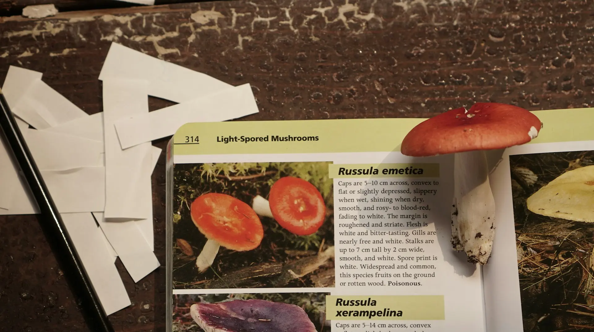
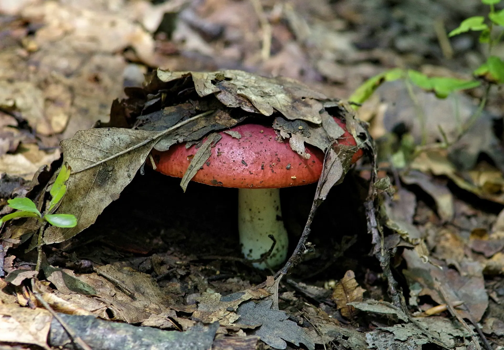
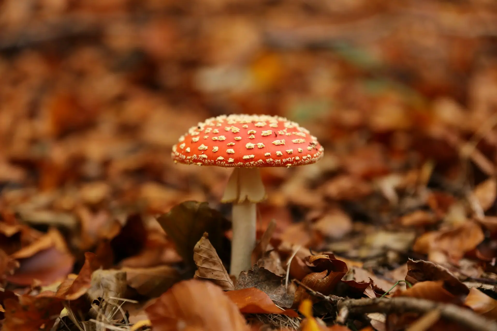

Quick reference Mushroom Guide
Discover a wide array of mushrooms from around the world, each with its own unique flavor profile and culinary uses.
Whether you're looking for earthy porcinis, delicate chanterelles, or meaty shiitakes, our selection has something for every palate.
Explore the diverse shapes, sizes, and colors of these fungi to elevate your dishes to new heights.

Where to look
Different species grow in different types of environments.
Forests are always a good starting place, though, with a wide range of species that grow in them.
If you’re after something specific, you can use our reference guide below to help you out.
Get to know your mushrooms
Frequently Asked Questions

What do I need to start mushroom foraging?
You'll need a local field guide, a sharp knife or scissors, a basket or mesh bag for collecting, and paper bags for separating specimens. Bring a small brush for cleaning, wear sturdy boots, and carry a GPS device or compass to track your location. A camera is also helpful to document your finds.

How can I identify edible mushrooms?
Learn from experienced foragers and reliable guidebooks – never rely on apps alone. Study each mushroom's specific features like cap shape, gill structure, stem characteristics, and spore prints. Start with easily identifiable species that have no poisonous lookalikes, and never eat anything unless you're completely certain of its identification.

Where can I find foraging spots?
Look in deciduous forests, especially near oak and maple trees, and in damp, shaded areas. Fallen logs and dead trees are often productive spots. Only forage on public lands where it's allowed, and always check local regulations. Remember to get permission for private property and keep your best locations private to prevent over-harvesting.

What are the best seasons for mushroom foraging?
Spring is ideal for morels, late summer brings chanterelles and boletes, and fall is peak season for most mushrooms including oysters and hen of the woods. Some species can even be found in winter, especially in milder climates. Each season offers different varieties, so year-round foraging is possible.